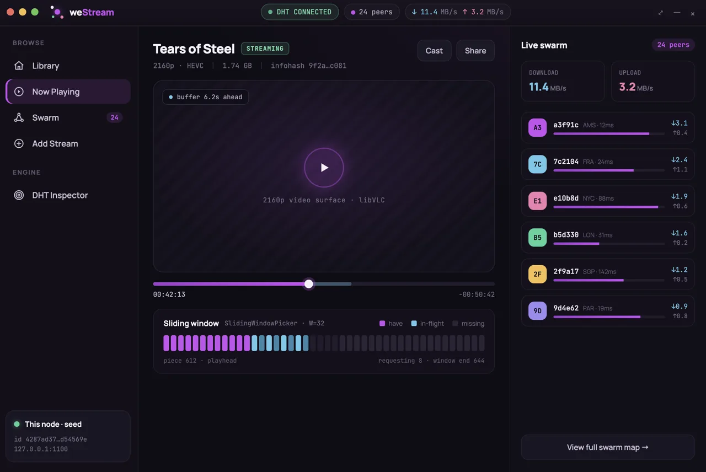
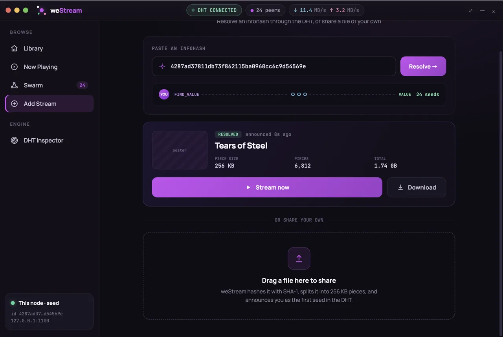
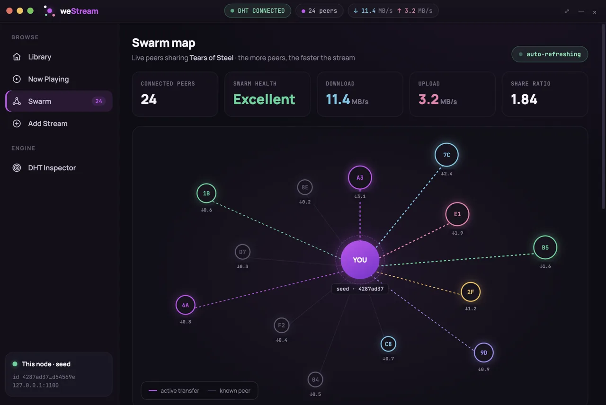
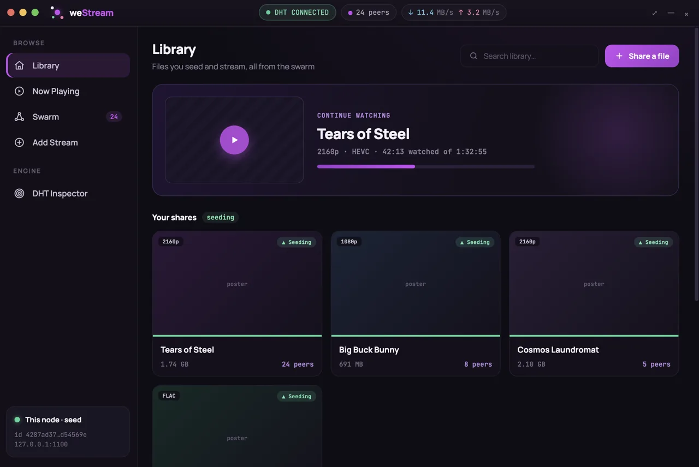

weStream plays video the moment it starts downloading — directly from other people, not from a server.
Every viewer becomes part of the network — the more people watch, the stronger it gets.



weStream plays video the moment it starts downloading — directly from other people, not from a server.
Drop in a video and it's live — anyone with its code can start watching. No uploads, no waiting, no cloud.
The player fetches the scenes you're about to watch first. Skip ahead anywhere — it keeps up with you.
Every viewer becomes part of the network, passing the video along. The more people watch, the faster it gets.
Your videos travel directly between the people watching them. Nothing sits in a data center, and nothing is watching back.
Everyone watching is also sharing — you see them, live.
Pieces arrive around your playhead — playback never waits.
No waiting for a download bar. Playback starts as soon as the first pieces arrive, and stays ahead of you while the rest streams in.
The video comes from everyone who has it, all at once. There's no company in the middle and no server to go down.
Every piece of every video is integrity-checked before it reaches your screen. What you watch is exactly what was shared.
No sign-up, no profile, no tracking. weStream doesn't know who you are — and neither does anyone else.
Pick any video file. weStream gives it a unique code you can hand to anyone — like a ticket to the stream.
Paste a code, and weStream automatically locates everyone who has that video and connects to all of them at once.
The video starts playing while it's still arriving. And as you watch, you quietly help pass it along to the next viewer.
A clean player with your library, live progress, and a map of the people you're streaming with.

No. There's nothing to sign up for and nothing to log into — download the app and it's yours. weStream has no servers, so there's nowhere for an account to even live.
Directly between devices. When you share a video, it stays on your computer — viewers pull pieces of it straight from you (and from each other). Nothing is uploaded to a cloud.
Yes — that's the whole point. The player fetches the pieces nearest to your playhead first, so playback starts in seconds and stays ahead of you. Skip anywhere; it re-prioritizes instantly.
A short code. Every shared video gets a unique fingerprint — send it over any chat, they paste it into Add Stream, and the network finds you automatically.
Every piece is checked against a cryptographic fingerprint before it's accepted. If a single byte is wrong, the piece is thrown away and re-fetched — what you watch is exactly what was shared.
The internet was built to connect people directly. Somewhere along the way, servers moved in between. weStream takes them back out — your movies travel from one living room to the next, never through a data center.
Download weStream, share a video with a friend, and watch it together — no server between you.